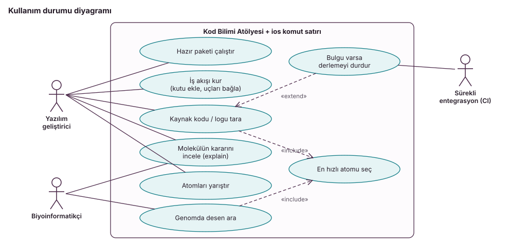
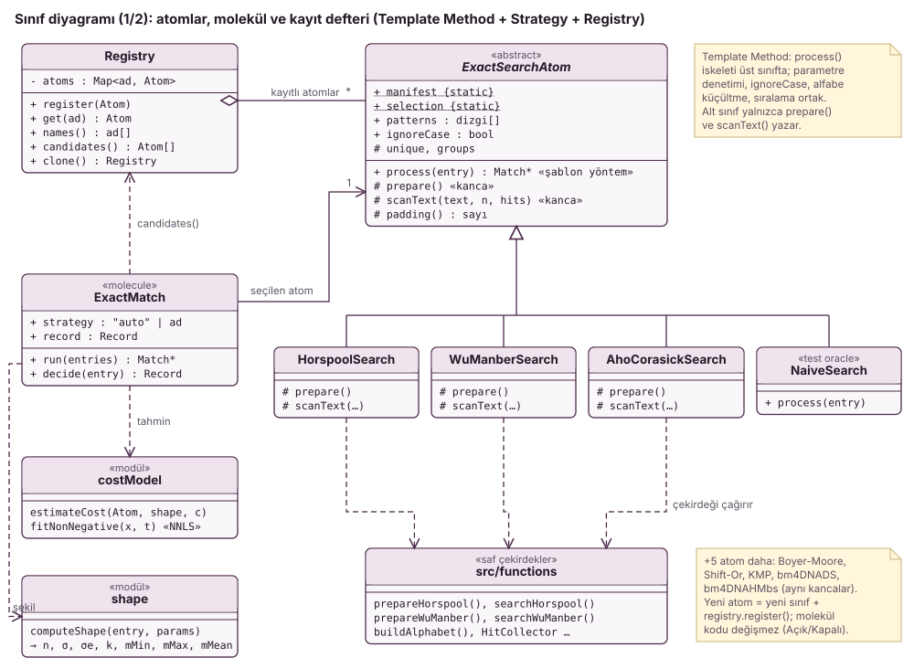
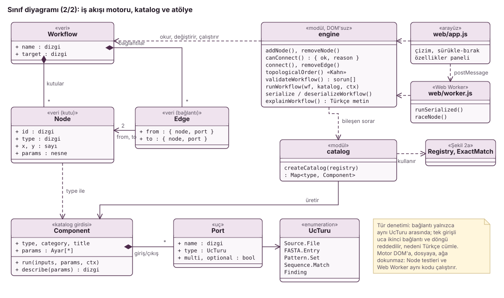
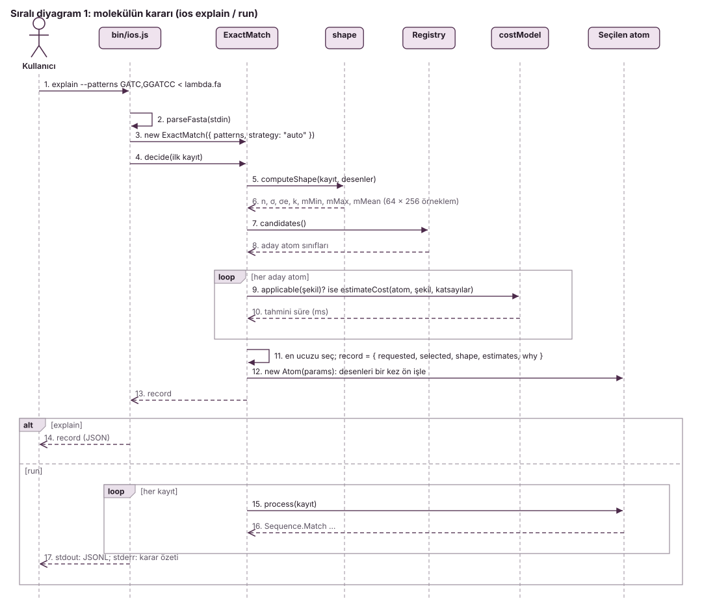
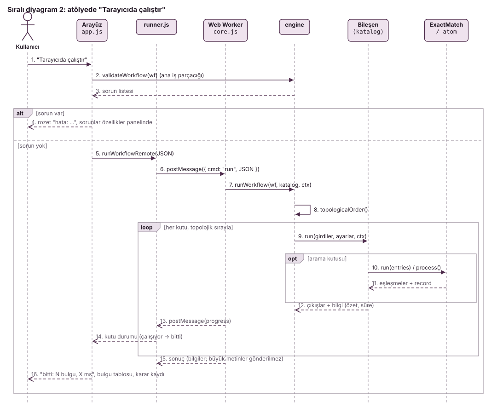
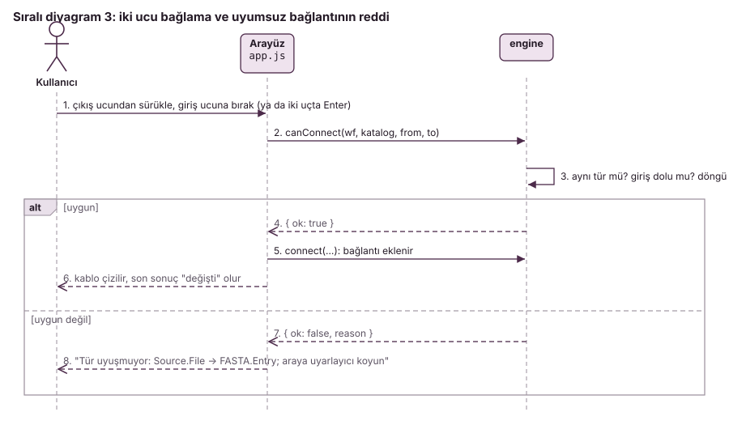
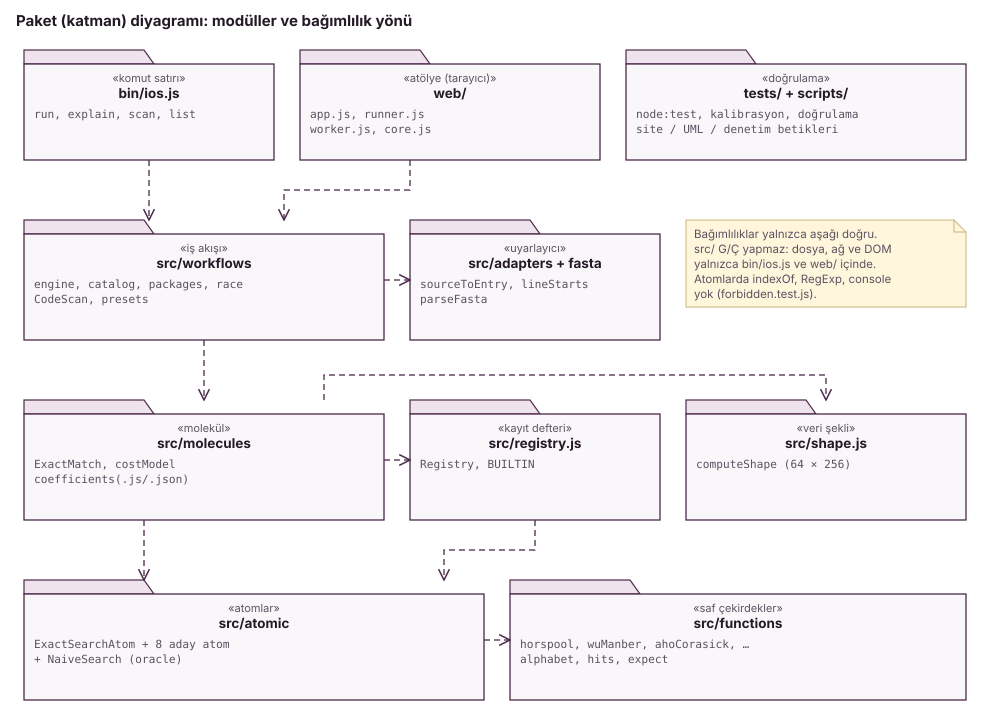

Akıllı Tam Desen Eşleştirme ve Kod Bilimi Atölyesi
Internet of Science (IoS) için sekiz atom, girdinin şekline göre seçim yapan bir molekül ve bunları yazılım mühendisliğinde kullanan bir iş akışı düzenleyicisi: sequence.pattern-match.exact
1. Ne yapar ve neden
Bir metinde (genom, protein, kaynak kod, log) bir ya da daha çok desenin geçtiği bütün yerleri bulmak hem biyoinformatiğin hem de yazılım araçlarının temel işidir. Bu işi yapan algoritmalardan hiçbiri her durumda en hızlı değildir. Bu çalışmanın katkıları:
- Yedi yeni atom (Horspool, Shift-Or, bm4DNADS, bm4DNAHMbs, KMP, Aho-Corasick, Wu-Manber) ve Boyer-Moore; hepsi IoS atom sözleşmesine uyar.
- ExactMatch molekülü: ilk kaydın şekline bakıp her atomun süresini kalibre edilmiş bir maliyet modeliyle tahmin eder ve en ucuzunu seçer. Atomlar bir kayıt defterinden gelir; yeni atom eklemek molekülü değiştirmez.
- Yazılım mühendisliğine aktarım: IoS fikri biyoloji içindir; biz aynı bileşenleri kaynak kod ve log taramasına taşıdık. Bir uyarlayıcı dosyayı FASTA kaydına çevirir; hazır desen kümeleri teknik borç, gizli bilgi, riskli API ve log hatası arar. Kod Bilimi Atölyesi (Şekil 2) bu bileşenleri tarayıcıda türlü uçlarla bağlanan kutular olarak sunar (Bölüm 8, Ek B). Gereksinimler, tasarım ilkeleri ve UML diyagramları Ek C'dedir.
- Kanıt: 360 birim testi, 180 vakalık kalibrasyon, model her değiştiğinde yeni ve yalnızca bir kez ölçülen taze doğrulama kümeleri.
Kapsam: yalnızca tam eşleşme. IoS düzenleyicisi (hub.ioscience.org) bu çalışma ortamından açılamadı (ağ vekili erişimi reddetti); atölyenin düzeni ödevle verilen tarife göre kuruldu.
2. Algoritmalar
Bütün atomlar ortak bir üst sınıftan (ExactSearchAtom, Template Method deseni) türer. Ortak sınıf parametre denetimini, ASCII ignoreCase'i, alfabe küçültmeyi (desende geçen her karakter 1, 2, …; geçmeyen 0) ve çıktı sıralamasını yapar; atom yalnızca prepare() ve scanText() yazar.
| Atom | Fikir | Ön işleme | Arama (tipik / en kötü) |
|---|---|---|---|
| Horspool | Pencerenin son karakterine göre kötü karakter kayması | O(m+σ) | O(n/m) / O(nm) |
| Boyer-Moore | Kötü karakter + iyi sonek, büyük olan kadar kay | O(m+σ) | alt doğrusal / O(nm) |
| bm4DNADS | Horspool + metnin sonuna desen kopyası (sentinel) + 3 kez açılmış atlama döngüsü | O(m+σ) | O(n/m) / O(nm) |
| bm4DNAHMbs | Son q karakterin bit kaydırmalı özetiyle kayma; q·⌈log₂σ⌉ ≤ 16 bit | O(m) | O(nq/(m−q+1)) / O(nm) |
| Shift-Or | Bit paralel: D = (D<<1) | maske[c]; m ≤ 32 | O(m+σ) | O(n) / O(n) |
| KMP | Başarısızlık işleviyle metinde geri dönmeden | O(m) | O(n) / O(n) |
| Aho-Corasick | Bütün desenlerden tam otomat; tek geçiş, sözlük bağları | O(Σm·σ) | O(n+z) / O(n+z) |
| Wu-Manber | Çok desenli blok kayması; kayma 0 ise kovadaki desenleri doğrula | O(Σm + tablo) | O(nB/kayma) / O(nΣm) |
Makaleden ayrılan noktalar (tamamı Ek A ve docs/sapmalar.md). Allmer 2016'nın PDF'ine bu ortamdan erişilemedi; bm4DNA atomları ödev tablosundaki tarife, Hume & Sunday 1991 ve Wu & Manber 1994'e göre yazıldı. En önemlisi: bm4DNAHMbs'de desende hiç geçmeyen q-gram için güvenli kayma m − q + 1'dir, m değil; desen pencerenin son q−1 karakterinden başlıyor olabilir (desen ACGTAC, q = 3, metin TTTTxACGTAC: 6 kaymak 5. konumdaki eşleşmeyi atlar). bm4DNADS'te sentinel'de durunca j ≥ n denetlenir; Shift-Or m > 32'de doğru çalışır ama kendini "uygun değil" ilan eder.
3. Girdi ve çıktılar, parametreler
Girdi: FASTA.Entry akışı { header, seq }. Parametreler: patterns (boş olmayan dizgilerden boş olmayan liste), ignoreCase (yalnızca ASCII), molekülde strategy ("auto" ya da atom adı; bilinmeyen ad geçerli adları listeleyen bir hata verir). Çıktı: her eşleşme için { header, pattern, position, length }; konumlar 0 tabanlı UTF-16, örtüşenler raporlanır, sıra kayıt → konum → desenin listedeki sırası; tekrarlanan desen ayrı raporlanır. Molekül record = { requested, selected, shape, estimates, why } üretir. Atölyede aynı veriler türlü uçlarla akar: Source.File → FASTA.Entry + Pattern.Set → Sequence.Match → Finding (dosya:satır:sütun).
4. Seçim yöntemi
Veri şekli (src/shape.js, ilk kayıttan): n, σ, k, mMin, mMax, mMean ve etkin alfabe σe = 1/Σp² (iki rastgele karakterin aynı çıkma olasılığının tersi; beklenen kayma σ'ya değil σe'ye bağlıdır). Kalibrasyon metinlerinde (n = 10⁶) DNA σ = 4 / σe = 4,0; protein 20 / 16,6; kaynak kod 103 / 18,3. v4 değişikliği: 16 384 karakterden uzun metinde σ ve σe, eşit aralıklı 64 parça × 256 karakterden sayılır (v3: 64 × 4096, 262 144 karaktere kadar tam sayım). Kaynak kodda örneklem nadir karakterleri kaçırır (v3'te tam sayımla σ = 128); σe neredeyse değişmez (Bölüm 6).
Maliyet modeli. Her atom şekilden "adım sayısı" özellikleri hesaplar (selection.features); tahmini süre = Σf cf·xf. Ortak özellikler: kurulum, n (metni kodlama), k, tahmini eşleşme sayısı. Atoma özgü olanlar: Horspool ailesi için Σi n/E[kayma(mi, σe)], Shift-Or ve KMP için k·n, Aho-Corasick için n ve tablo boyu, Wu-Manber için pencere × B, kova doğrulaması ve tablo, bm4DNAHMbs için q-gram pencereleri. Kalibrasyon: 3 alfabe (DNA, protein, kaynak kod) × n ∈ {10⁴, 10⁵, 10⁶} × m ∈ {4, 8, 16, 32, 64} × k ∈ {1, 4, 16, 64} = 180 vaka; atomlar dönüşümlü ölçüldü (her turda her atom bir kez), ısınma + 5 tekrarın medyanı, kısa ölçümler blok içinde tekrarlandı; ızgara 233,9 s sürdü. Katsayılar negatif olmayan en küçük kareler (Lawson–Hanson) ile, göreli hatayla uyduruldu; eşleşme başına maliyet bütün atomlarda ortak (3,31·10⁻⁷ s). Medyan göreli hata %15,5 (Horspool) ile %23,6 (bm4DNAHMbs) arası. Neden kural yerine model? Eşikler her yeni atomda elle yeniden düşünülmeli; modelde atom kendi özelliklerini yazar, npm run calibrate katsayıları bulur. Tasarım: atomlar Strategy, ortak sınıf Template Method, kayıt defteri Açık/Kapalı ilkesini uygular; molekülün kodunda hiçbir atom adı geçmez (Ek C, Şekil 4).
5. Nasıl test edildi
| Test dosyası | Ne sınıyor | Test |
|---|---|---|
| contract / atoms | Her atom için sözleşme (konum, örtüşme, sıra, ASCII ignoreCase, UTF-16, hatalar) ve 16 özel durum (ABAB, tek harf, 31/32/33 sınırı, vekil çift, boşluklu metin…) | 117 + 135 |
| oracle.test.js | Her atom + molekül NaiveSearch ile eleman eleman: lambda genomu, 126 E. coli proteini, 6 sentetik alfabe, 360 tohumlu rastgele vaka | 19 |
| molecule.test.js | record, en ucuz seçim, zorla seçilen 9 strateji aynı sonuç, sahte atom molekül değişmeden seçilir, uygulanamaz atom seçilmez | 15 |
| engine / packages | İş akışı motoru: tür denetimi, döngü, topolojik sıra, çalıştırma, JSON, açıklama; altı hazır paket bağımsız hesapla aynı | 21 + 8 |
| forbidden / cli / core | Atomlarda indexOf, RegExp, console, Node modülü, saat, rastgelelik yok; komut satırı; FASTA, şekil, örnekleme, NNLS | 45 |
Negatif kontroller: yasaklı işlev taraması kendisine verilen kötü örnekleri yakaladığını da sınar. Mutasyon denetimi (npm run mutation) koda 12 küçük hata yerleştirdi; 12'si de yakalandı (docs/mutasyon.md). Arayüz: scripts/arayuz-denetimi.js gerçek Chromium'da altı paketi çalıştırır ve bulgu sayılarını komut satırıyla karşılaştırır (hepsi aynı), sürükle-bırak, uyumsuz bağlantının reddi, klavye, dışa/içe aktarma ve 390 px görünümü dener. npm test temiz kopyada, bağımlılık kurmadan 360/360 geçiyor.
6. Sonuçlar

Doğrulama tasarımı. Kümeler kalibrasyonda kullanılmadı: farklı tohumlar, ızgara noktalarının arasından değerler (n 12 000–900 000, k 2–120, m 3–100), vakaların %30'unda karışık desen uzunlukları ve kalibrasyonda olmayan üç alfabe (log, ikili ab, İngilizce benzeri metin). Yavaşlama = harcanan süre / o vakadaki en hızlı atomun süresi. "Uçtan uca" satırı molekülün kendi süresidir (kurulum + şekil + tahmin + arama, aynı turlarda ölçüldü).
| Politika (taze küme D, v4, 120 vaka) | En hızlıyı seçme | %10 içinde | Yavaşlama (geo. ort.) | En kötü | Toplam / en iyi |
|---|---|---|---|---|---|
| ExactMatch: seçilen atom | %76,7 | %84,2 | 1,051 | 2,00× | 1,033 |
| ExactMatch: uçtan uca (karar dahil) | %58,3 | %70,0 | 0,990 | 3,26× | 1,064 |
| her zaman Wu-Manber | %58,3 | %67,5 | 1,131 | 2,78× | 1,198 |
| her zaman Aho-Corasick | %33,3 | %36,7 | 1,632 | 5,02× | 1,291 |
| Allmer 2016 kuralı (mMean < 50 → bm4DNADS, değilse bm4DNAHMbs) | %2,5 | %5,8 | 2,543 | 18,71× | 2,658 |
| her zaman Horspool / bm4DNADS / BM / bm4DNAHMbs / Shift-Or / KMP | %0,0–4,2 | %0,0–9,2 | 2,793–9,196 | 17,52–58,30× | 2,931–9,062 |
Karar yükü (denetim bulgusu ve düzeltmesi). v3'te molekül karar için metni 262 144 karaktere kadar sayıyordu; küçük ve tek desenli girdide bu, aramanın kendisi kadar sürdü ve uçtan uca B'de geo. ort. 1,187 ile "hep Wu-Manber"in (1,139) gerisinde kaldı. v4 örneklemi küçülttü. Doğrulamadaki uçtan uca ölçüm iki gürültülü sürenin farkına dayandığı için küçük karar süresini ayıramıyor: D'de molekül, seçtiği atomun tek başına süresinden medyanda kısa ölçüldü (oran 0,951), uçtan uca geo. ort. bu yüzden 1'in altına düştü. Karar adımı bu nedenle ayrıca, tek başına ölçüldü (bench/results/karar-yuku-v4.md):
| Küme | Şekil v3 (medyan) | Şekil v4 (medyan) | Karar v4 (medyan) | Karar / seçilen atom (medyan) | (%90) |
|---|---|---|---|---|---|
| D (çok desen) | 0,648 ms | 0,063 ms | 0,116 ms | %4,1 | %22,9 |
| E (k = 1) | 0,515 ms | 0,065 ms | 0,116 ms | %11,4 | %60,8 |
Örneklemin bedeli: σe'nin tam sayıma göre hatası D'de medyanda %0,15, en kötü %7,00; σ, örneklenen 112 vakanın 29'unda eksik sayıldı (en çok %23,5).
Dürüstlük protokolü ve sürümler. Katsayılar her seferinde yalnızca kalibrasyon ölçümlerinden uyduruldu. Model her değiştiğinde yeni bir taze kümede, bir kez ölçüldü; sonuca bakarak model ayarlanmadı. v4'ün kümeleri (D, E) karar yükü düzeltmesinden sonra yeni tohumlarla üretildi. Eski sonuç dosyaları silinmedi:
| Sürüm | Değişiklik | Küme | En hızlı | Geo. ort. | En kötü | Uçtan uca geo. ort. | Toplam / en iyi |
|---|---|---|---|---|---|---|---|
| v1 | İlk model | A | %66,7 | 1,168 | 6,11× | 1,573 | 1,446 |
| v2 | Tek desenli atomlarda en kısa / ortalama / en uzun desen | A | %75,8 | 1,078 | 2,27× | 1,268 | 1,271 |
| v3 | Eşleşme başına maliyet ortak | A | %81,7 | 1,038 | 1,83× | 1,255 | 1,007 |
| v3 | Aynı model, taze | B | %85,8 | 1,016 | 1,36× | 1,187 | 1,032 |
| v3 | Aynı model, k = 1 | C | %51,7 | 1,073 | 2,10× | 1,686 | 1,095 |
| v4 | Şekil örneklemi 64 × 256; yeniden kalibrasyon | D | %76,7 | 1,051 | 2,00× | 0,990 | 1,033 |
| v4 | Aynı model, k = 1 | E | %55,0 | 1,081 | 2,06× | 1,300 | 1,105 |
A, v1 ve v2'nin hataları bulunurken görüldüğü için "görülmemiş" sayılmaz. v1–v3 Xeon 2,30 GHz'de, v4 Xeon 2,10 GHz'de ölçüldü; yeni makine aynı kalibrasyon ölçümlerini medyanda 1,74 kat yavaş yaptı ve daha gürültülüydü (bench/results/makine-karsilastirma.md). Bu yüzden seçilen atomun B'deki 1,016'dan D'de 1,051'e kötüleşmesinin ne kadarının modelden, ne kadarının makineden geldiği ayrılamaz.
Yanlış seçimlerin analizi
- v1, karışık uzunlukta desen (düzeltildi): A'da vaka 90: DNA, k = 9, m = 7/3/17; bm4DNAHMbs 3,09 ms, Aho-Corasick 0,51 ms (6,1×). Tek desenli atomların maliyeti ortalama uzunlukla hesaplanıyordu; toplam işi en kısa desen (kayma ≈ 1) belirler.
- v2, ikili alfabe (düzeltildi): eşleşme başına maliyet atom başına serbestti ve 45 kat değişiyordu; eşleşmenin çok olduğu girdide çıktı maliyeti düşük sayılan atom yapay olarak ucuz göründü. v3'te ortak tutuldu.
- v4, kalan en kötü vaka (D, vaka 119): İngilizce benzeri metin (kalibrasyonda yok), n = 531 186, k = 24, m = 92/37/150. Seçilen bm4DNAHMbs: tahmin 7,23 ms, ölçülen 12,57 ms; en hızlı Wu-Manber: tahmin 11,17 ms, ölçülen 6,28 ms (2,00×). İki tahmin ters yönde yanıldı. Olası neden: model metni tekdüze rastgele sayar; kelimelerden oluşan metinde sık q-gramlar desende de geçer ve q-gram kayması öngörülenden kısa kalır. Bu vaka görüldükten sonra model değiştirilmedi.
Tek desen (E). Seçim zayıf: %55,0 en hızlı, geo. ort. 1,081, en kötü 2,06×; en kötü 5 vakanın 5'i ikili alfabede (ikili alfabede geo. ort. 1,222, diğer alfabelerde 1,029–1,096). Seçilen atomla molekül yine bütün politikalardan iyi (Allmer 1,192, hep Horspool 1,198), ama karar yükü dahil uçtan uca 1,300 ile ikisinin de gerisinde. Tam tablolar: Ek D.
7. Sınırlar
- Karar ilk kayda göre verilir (sözleşme). İlk kayıt (kod taramasında ilk dosya) kısa, sonrakiler uzunsa seçim kötü olabilir.
- Özellikler tekdüze rastgele metin varsayar. σe sıklık farkını yakalar ama tekrarlı yapıyı (kelimeler, zaman damgaları, girinti) yakalamaz; kalan yanlış seçimler buradan geliyor.
- Tek desende ve ikili alfabede seçim zayıf; tek desende karar yükü uçtan uca hâlâ ölçülebilir (karar / atom medyanda %11,4). İkili alfabedeki zayıflık düzeltilmedi.
- Ölçüm. Paylaşımlı bulut makinesi; katsayılar makineye özgü (teslimden önce
npm run calibratevenpm run benchyeniden çalıştırılmalı). Doğrulama düzeneği molekül ile atomu ayrı işler olarak ölçtüğü için küçük farkları ayıramıyor (D'de oran 0,951); en hızlı atomun ≥ 1 ms sürdüğü 92 vakada sonuç benzer: %78,3 en hızlı, geo. ort. 1,042. - Hiç kazanmayan atomlar: Boyer-Moore, Shift-Or, KMP ve bm4DNAHMbs D'de hiçbir vakada en hızlı olmadı. Allmer kuralının sonucu bu JavaScript uygulamasına özgüdür.
- Bellek modelde yok; Aho-Corasick için yalnızca bir üst sınır var (3·10⁷ hücre).
8. Nasıl kullanılır

web/): "tek desen, büyük dosya" paketi. Aynı 880 KB kaynak kod dosyasında üst dal tek desen ("return"), alt dal 16 Python anahtar sözcüğü arar; molekül üstte bm4DNADS, altta Aho-Corasick seçer. Sağda seçili molekülün karar kaydı: veri şekli ve her atomun tahmini süresi.npm test # 360 test, bağımlılık yok npm run web # atölye: http://localhost:8327/web/ (site: /site/, sunum: /docs/sunum/) npm run calibrate && npm run bench # katsayıları yenile, doğrula (bench/results/) node bin/ios.js explain --patterns GATC,GGATCC < tests/data/lambda_NC_001416.fa node bin/ios.js run ExactMatch --patterns GATC,GGATCC < tests/data/lambda_NC_001416.fa > cikti.jsonl node bin/ios.js scan --preset secrets --fail src/ # kodda gizli bilgi izi → çıkış kodu 1
Atölyede: soldan bir hazır paket seçin (ya da bileşenleri tuvale sürükleyip uçlarını bağlayın), "Tarayıcıda çalıştır"a basın; ExactMatch kutusunu seçince explain çıktısı sağ panelde görünür. Lambda genomunda explain: "selected": "Bm4DnaDsSearch", şekil n = 48 502, σ = 4, σe = 3,994, k = 2, m = 4..6; tahminler (ms): bm4DNADS 0,775; Horspool 0,799; Boyer-Moore 0,812. run 121 eşleşme yazar; ilki {"pattern":"GATC","position":415,"length":4}.
Ek A. Makaleden ve klasik tariflerden sapmalar
| # | Atom | Uygulama | Neden |
|---|---|---|---|
| H1 | bm4DNAHMbs | Desende olmayan q-gram için kayma m − q + 1 | m kadar kaymak, pencerenin son q−1 karakterinden başlayan eşleşmeyi atlar (Bölüm 2). Mutasyonla sınandı: 34 test başarısız oldu. |
| H2 | bm4DNAHMbs | Son q-gram için tabloda 0; doğrulamadan sonra ayrı hesaplanan shift2 | Tablodaki 0 doğrulamadan sonra da kullanılırsa döngü yerinde sayar. |
| H3 | bm4DNAHMbs | Karakter başına ⌈log₂ σ⌉ bit; DNA için 3 bit, q = 5; özet çakışmasız | 0 kimliği "desende olmayan karakter" için ayrıldığından DNA 2 bite sığmaz. |
| H5 | bm4DNAHMbs | Bütün desenler tek tabloyu paylaşır; her desen yalnızca kendi girdilerini yazar ve siler | Desen başına 64 K tablo çok desende belleği ve kurulum süresini patlatır. |
| D1 | bm4DNADS | Metin kodlanırken sona en uzun desen kadar boş yer; her desen kendi sentinel'ini yazar | Sentinel metne yazılırsa sonraki desen bozuk metinde arar. |
| D2 | bm4DNADS | Döngü durunca j ≥ n denetimi | Sentinel her zaman "eşleşir"; mutasyonda (j > n) döngü bitmedi. |
| D4 | bm4DNADS | shift2 son karakterin ilk m−1 karakterdeki en sağ yerinden | Son karakter sayılırsa kayma 0, sonsuz döngü. |
| S1 | Shift-Or | m > 32: süzgeç + doğrulama; applicable() = uygun değil | Atom her girdide doğru olmalı; molekül seçmez. |
| W1 | Wu-Manber | Tablo boyu ≈ 8 × desen bloğu (2⁸–2¹⁸); çakışmada en küçük kayma | Büyük sabit tablo küçük metinde aramadan pahalı; en küçük kayma doğruluğu korur. |
Ek B. Yazılım mühendisliği uygulaması ve atölye
Katmanlar. src/adapters/sourceToEntry.js bir kaynak dosyayı { header: ">yol", seq: içerik } kaydına çevirir (Adapter deseni); atomlara dokunulmaz. src/workflows/CodeScan.js konumları satır ve sütuna çevirir. Hazır kümeler: todo, secrets (büyük/küçük harf duyarsız), banned-api, errors. ios scan --fail bulgu varsa çıkış kodu 1 döndürür (sürekli entegrasyon). Agora projesinde ios scan --preset banned-api ../forum static/app.js içinde 3 innerHTML buldu; seçilen atom Horspool.
İş akışı motoru (src/workflows/engine.js) DOM'a, dosyaya ve ağa dokunmaz: düğüm ekleme/silme, türlü uçlar arasında bağlantı (uyumsuz tür, döngü ve tek girişli uca ikinci bağlantı nedeniyle reddedilir), Kahn algoritmasıyla topolojik sıra, düğüm düğüm çalıştırma (hata veren kutudan sonrakiler "atlandı"), JSON dışa/içe aktarma ve kurala dayalı Türkçe açıklama. Aynı modül tarayıcıda bir Web Worker içinde ve Node'da testlerde çalışır. Atölye (web/) saf HTML, CSS ve ES modülleridir; derleme adımı, paket ya da CDN yoktur ve algoritmalar kopyalanmaz: katalog kayıt defterini, molekülü ve uyarlayıcıları doğrudan ../src/'den içe aktarır. Tarayıcıda çalışmayan tek şey JSON içe aktarma sözdizimiydi; katsayılar ayrıca bir ES modülü olarak yazıldı (iki dosyanın aynı olduğunu bir test denetler).
| Hazır paket | Örnek veri (depodaki gerçek dosyalar) | Bulgu (atölye = komut satırı) | Seçilen atom |
|---|---|---|---|
| Teknik borç avı | Agora forum/, 114 dosya | 18 | Horspool |
| Gizli bilgi sızıntısı (+ kapı) | 3 açıkça sahte örnek dosya | 7 | Wu-Manber |
| Yasaklı / riskli API | Agora forum/ | 3 | Horspool |
| Log incelemesi | log üreticisi + 3 Traceback örneği | 117 | Wu-Manber |
| Tek desen, büyük dosya | bench/corpus/kod.txt | 882 + 7 715 | bm4DNADS / Aho-Corasick |
| Biyoloji köprüsü | lambda genomu | 121 + 121 | bm4DNADS |
Ek C. Yazılım mühendisliği: gereksinimler, tasarım ilkeleri, test stratejisi ve UML
C.1 Gereksinimler ve izlenebilirlik
İG: işlevsel gereksinim (sistemin ne yapacağı); İOG: işlevsel olmayan gereksinim (nasıl yapacağı: hız, taşınabilirlik, erişilebilirlik). Her gereksinim onu doğrulayan teste ya da ölçüme bağlıdır (izlenebilirlik).
| # | Gereksinim | Karşılayan | Doğrulama |
|---|---|---|---|
| İG1 | Bir ya da çok desenin bütün geçişleri, sözleşmedeki sırayla (konum, desen sırası), örtüşenler dahil | 8 atom, ExactSearchAtom | contract, atoms, oracle (360 rastgele vaka) |
| İG2 | Girdinin şekline göre atom seçimi ve gerekçeli karar kaydı | ExactMatch, costModel, shape | molecule.test.js; doğrulama kümeleri D, E |
| İG3 | Molekül değişmeden yeni atom eklenebilmeli | Registry | sahte atom testleri (molecule, engine) |
| İG4 | Kaynak kod ve log taraması; dosya:satır:sütun; bulgu varsa CI'da başarısızlık | sourceToEntry, CodeScan, ios scan --fail | cli.test.js, core.test.js |
| İG5 | Tarayıcıda iş akışı kurma: kutu ekleme, türlü uçları bağlama, uyumsuz bağlantıyı nedeniyle reddetme, çalıştırma, açıklama, dışa/içe aktarma, paylaşım bağlantısı | engine, catalog, web/ | engine.test.js; arayüz denetimi (29 denetim) |
| İG6 | Hazır paketler komut satırıyla aynı sonucu vermeli | packages.js | packages.test.js, npm run paketler, arayüz denetimi |
| İOG1 | Node 22+, ES modülleri, npm paketi yok; atomlarda hazır arama işlevi, console, dosya, ağ yok | bütün src/ | forbidden.test.js; temiz kopyada npm test |
| İOG2 | Seçim hızlı olmalı: karar süresi aramaya göre küçük | v4 örneklemi (64 × 256) | karar-yuku-v4.md: medyanda %4,1 (D) |
| İOG3 | Arayüz donmamalı, klavyeyle kullanılabilmeli, 1280 px ve 390 px'te bozulmamalı, açık/koyu tema | Web Worker, app.css | arayüz denetimi (yatay taşma 0 px, klavye, tema) |
| İOG4 | Sonuçlar dürüst ve yeniden üretilebilir: tohumlu veri, bir kez ölçülen taze kümeler, sayılar dosyalardan | bench/, tests/benchmarks/ | sayı denetimi betiği; sürüm tablosu |
C.2 Tasarım ilkeleri (SOLID) ve desenler
| İlke / desen | Nerede | Ne kazandırıyor |
|---|---|---|
| Tek sorumluluk (S) | Çekirdek (src/functions), atom (sözleşme), molekül (seçim), motor (iş akışı), arayüz (çizim) ayrı modüller | Her modül tek bir nedenle değişir; ayrı test edilir. |
| Açık/Kapalı (O) + Registry | Registry; ExactMatch'te ve atölye kataloğunda atom adı geçmez | Yeni atom = yeni dosya + bir satır; molekül ve atölye değişmez. |
| Yerine geçebilme (L) + Strategy | Her atom aynı girdi/çıktı sözleşmesi; NaiveSearch ile birebir | Molekül atomları birbirinin yerine takar. |
| Arayüz ayrımı (I) | Atom yalnızca prepare, scanText yazar; seçim bilgisi ayrı selection nesnesinde | Atom yazarı molekülün içini bilmek zorunda değil. |
| Bağımlılığın tersine çevrilmesi (D) | Molekül somut atomlara değil kayıt defterine; motor somut bileşenlere değil kataloğa bağlı; örnek veri ctx.loadSample ile dışarıdan | Testte sahte atom ve sahte yükleyici takılabilir. |
| Template Method | ExactSearchAtom.process iskelet; kancalar alt sınıfta | Sözleşme kuralları tek yerde. |
| Adapter | sourceToEntry, parseFasta, eşleşme → bulgu | Kod, log ve FASTA aynı atomlara akar. |
| Saf çekirdek / ince kabuk | src/ G/Ç'siz; G/Ç bin/ios.js ve web/'de (Şekil 9) | Aynı kod Node'da, tarayıcıda ve Worker'da çalışır. |
C.3 Test stratejisi
Birim testleri (atom, şekil, NNLS, motor) → bütünleşme testleri (komut satırı alt süreç olarak; paketler uçtan uca motorla) → kabul testleri (gerçek tarayıcıda arayüz denetimi; altı paket = komut satırı) → test kalitesinin denetimi (mutasyon: 12/12) → performans doğrulaması (kalibrasyondan ayrı, bir kez ölçülen taze kümeler). Referans uygulama (oracle) yöntemi: hızlı her atomun çıktısı yavaş ama kesin doğru NaiveSearch'ünkiyle eleman eleman karşılaştırılır.
C.4 UML diyagramları
Kaynaklar docs/uml/*.puml (PlantUML); çizimler docs/uml/svg/, hepsi tek dosyada docs/uml/UML_Diyagramlari.pdf.




ios explain / run ile molekülün kararı.


Ek D. Ek sonuçlar
| Politika (taze küme E, v4, k = 1, 120 vaka) | En hızlı | %10 içinde | Geo. ort. | En kötü | Toplam / en iyi |
|---|---|---|---|---|---|
| ExactMatch: seçilen atom | %55,0 | %70,8 | 1,081 | 2,06× | 1,105 |
| ExactMatch: uçtan uca | %20,0 | %34,2 | 1,300 | 3,10× | 1,088 |
| Allmer 2016 kuralı | %22,5 | %50,8 | 1,192 | 2,67× | 1,147 |
| her zaman Horspool | %42,5 | %64,2 | 1,198 | 5,26× | 1,203 |
| her zaman bm4DNADS | %22,5 | %53,3 | 1,257 | 6,55× | 1,216 |
| her zaman Wu-Manber | %20,8 | %26,7 | 1,315 | 3,23× | 1,331 |
| Alt küme (D) | Politika | Vaka | En hızlı | %10 içinde | Geo. ort. | En kötü |
|---|---|---|---|---|---|---|
| Görülen alfabeler (DNA, protein, kod) | ExactMatch (seçilen) | 60 | %80,0 | %86,7 | 1,040 | 1,49× |
| Görülen alfabeler | Allmer 2016 | 60 | %1,7 | %6,7 | 2,680 | 18,71× |
| Görülmeyen alfabeler (log, ikili, metin) | ExactMatch (seçilen) | 60 | %73,3 | %81,7 | 1,061 | 2,00× |
| Görülmeyen alfabeler | Allmer 2016 | 60 | %3,3 | %5,0 | 2,413 | 17,71× |


Ham ölçümler (bench/results/): calibration.json (v4), calibration-v3.json, validation-v1/-v2.json, validation.json (A), validation-taze.json (B), validation-tek.json (C), validation-d.json (D), validation-e.json (E), karar-yuku-v4.json; tablolar aynı adlı .md dosyalarında. Ölçümlerde --expose-gc açık. Rapordaki her sayı scripts/sayi-denetimi.js ile bu dosyalara karşı denetlenir.
Ek E. Kaynaklar
- Allmer J. (2016). Exact pattern matching: Adapting the Boyer-Moore algorithm for DNA searches. PeerJ PrePrints 4:e1758v1. (Bu çalışma ortamından erişilemedi.)
- Boyer R. S., Moore J. S. (1977). A fast string searching algorithm. CACM 20(10).
- Horspool R. N. (1980). Practical fast searching in strings. Software: Practice and Experience 10(6).
- Hume A., Sunday D. (1991). Fast string searching. Software: Practice and Experience 21(11).
- Knuth D., Morris J., Pratt V. (1977). Fast pattern matching in strings. SIAM J. Computing 6(2).
- Baeza-Yates R., Gonnet G. H. (1992). A new approach to text searching. CACM 35(10).
- Aho A. V., Corasick M. J. (1975). Efficient string matching. CACM 18(6).
- Wu S., Manber U. (1994). A fast algorithm for multi-pattern searching. TR-94-17, University of Arizona.
- Lawson C. L., Hanson R. J. (1974). Solving Least Squares Problems. Prentice-Hall (NNLS).
- Kahn A. B. (1962). Topological sorting of large networks. CACM 5(11) (iş akışı motorundaki sıra).
- Charras C., Lecroq T. Exact String Matching Algorithms (çevrimiçi el kitabı).
- Internet of Science: hub.ioscience.org/p/learn/ (bu ortamdan açılamadı; atölye düzeni ödevdeki tarife göre).
- Veri: NCBI NC_001416.1 (bowtie2 deposundaki kopya); UniProtKB/Swiss-Prot E. coli K-12 kayıtları (
tests/data/*.kaynak.tsv); bu deponun Agora projesi (forum/).
Ek F. Yapay zekâ kullanımı ve ekip
Ders politikası yapay zekâ kullanımını serbest bırakıyor. Kod, testler, ölçüm betikleri, iş akışı motoru ve atölye, site, slaytlar, şekiller ve bu rapor bir yapay zekâ kodlama aracıyla (Claude Code) üretildi. Bütün sayılar bu çalışma sırasında çalıştırılan komutların çıktısından alındı. Sunumda her bölümün anlatılabilmesi için docs/anlatim.md hazırlandı. Grup üyelerinin katkıları: Baki [soyad, numara]: [...]; [Üye 2 ad soyad, numara]: [...].